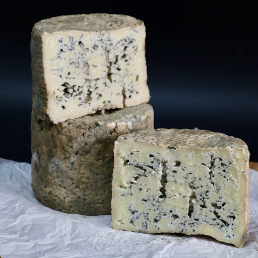
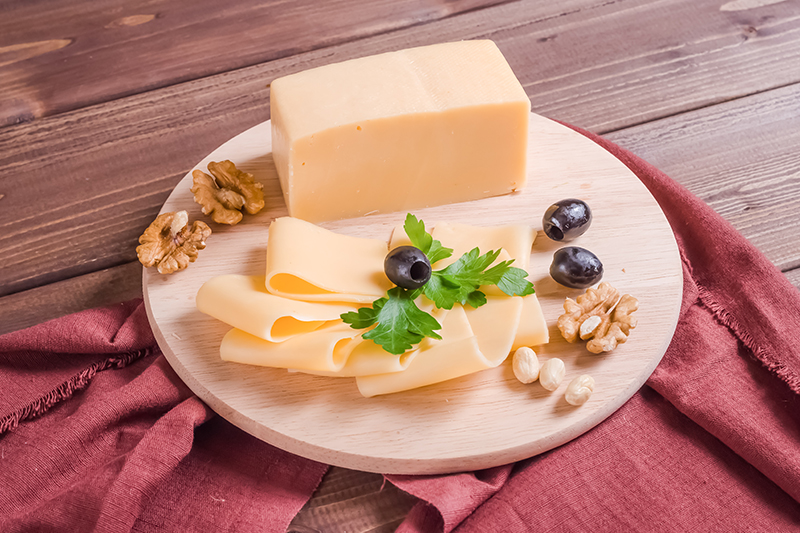
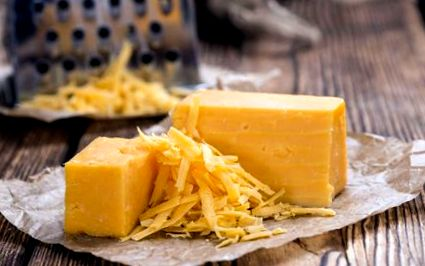

A világon rengeteg féle sajt van, és mindegyiknek egyedik elkészítési módjai vannak. Egyes sajttípusoknak speciális kezelés és készítés szükséges. Ezen a weblapon összeszedtük 3 különleges sajt elkészítéshez szükséges receptjét.
|  | Gorgonzolát készíteni igazi kihívás! Összetett technológia, hosszadalmas érlelés vezet a világ egyik legérdekesebb sajt-költeményéhez. Ez a fajta már-már folyós, krémesen kenhető sajt ritka a kékpenészes sajtok világában, s az íze … az íze igazi mennyei csoda! A kéksajtok többségében a megfázatott sajtrögök között kialakuló üregekben, röghézagokban telepszik meg a penész. Hogyan talál a lágy gorgonzolában barlangocskát és éltető oxigént a nemespenész? Katt a képre a receptért. |
| Gorgonzola sajt | |
|  | Trappista szerzetesek tökéletesítették receptjét a Port du Salut kolostorban, Franciaországban.A féltve őrzött technológia titokban tudott maradni, nem került ki a Trappista- barátok kolostorainak falai közül. Az 1880-as években került Magyarországra egy az eredeti Trappistára (Port Salut-ra) hasonlító sajt készítésének módja a Banjaluka melletti „Mária csillaga” nevű kolostorból. Itt szintén Trappista szerzetesek készítették sajtjaikat hasonlóan magas színvonalon. Kedvelt és népszerű sajtok voltak az Oszták-Magyar monarchiában. |
| Trapista | |
|  | Az egyik legkedveltebb sajt a világon a Cheddar. A XII. században kapta a nevét egy Cheddar nevű faluról. A közeli barlangokat használták a sajtok tárolásra, ahol az állandó hőmérséklet és páratartalom nyújtotta a tökéletes környezetet,így biztosíva a sajt érését és eltarthatóságát.Az eljárás is egyedülálló a sajtkészítésben, mely szintén a városról kapta a nevét, a cheddározást. |
| Cheddar sajt |